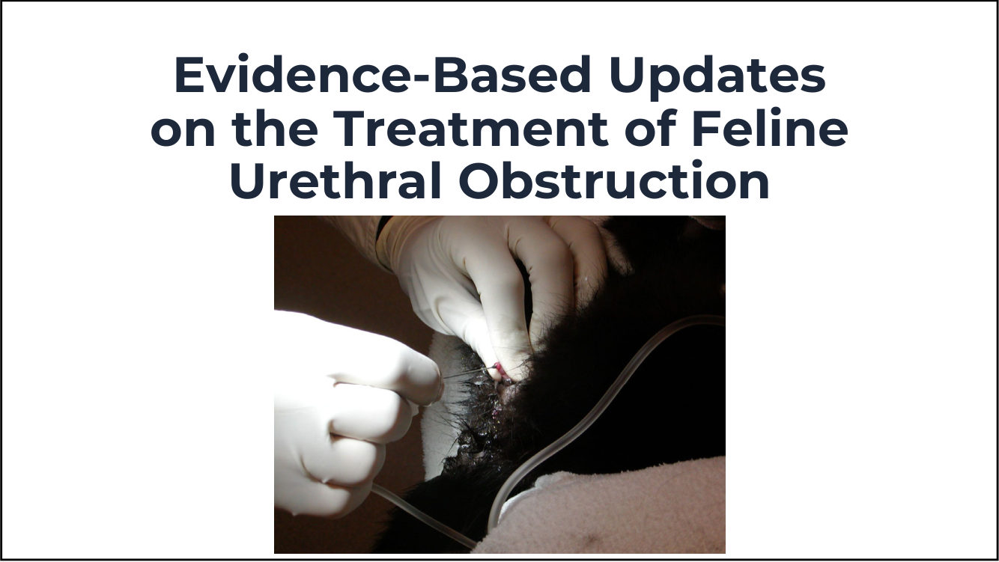
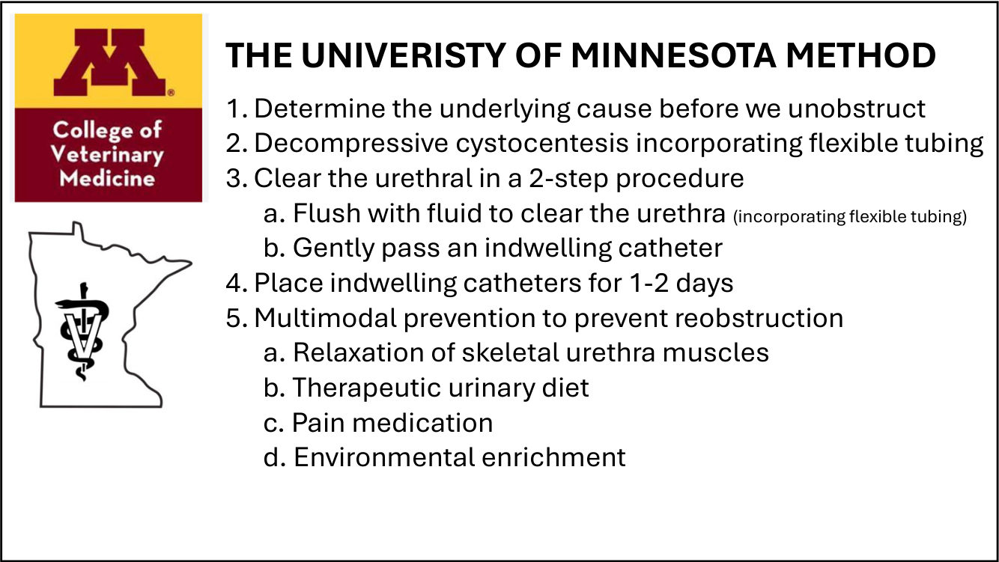
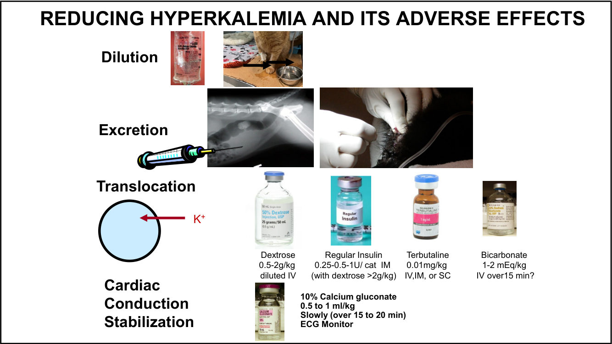
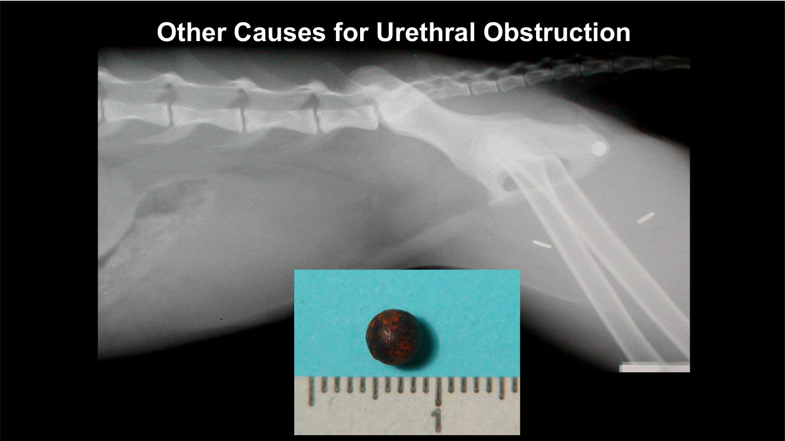
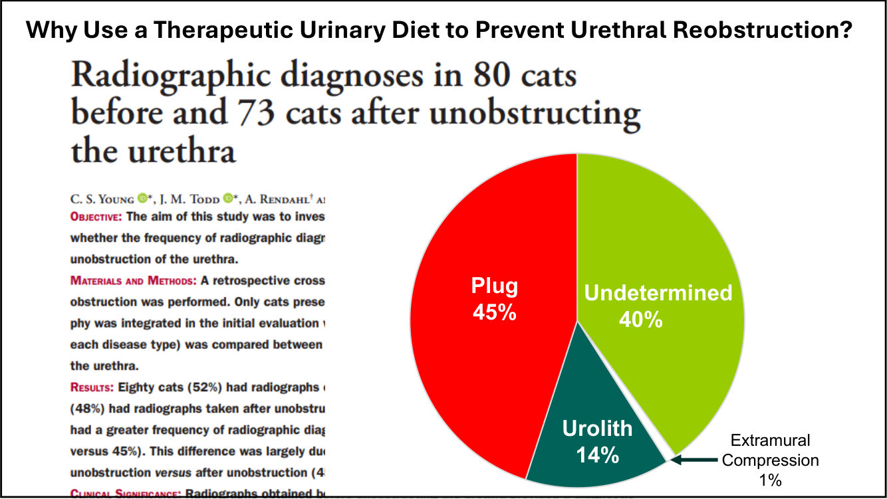
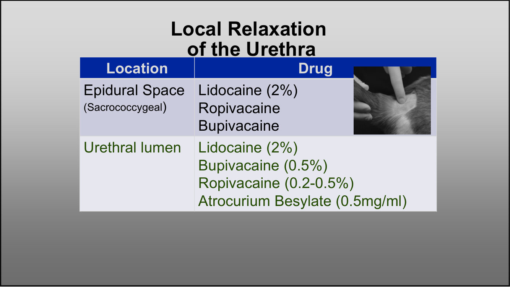
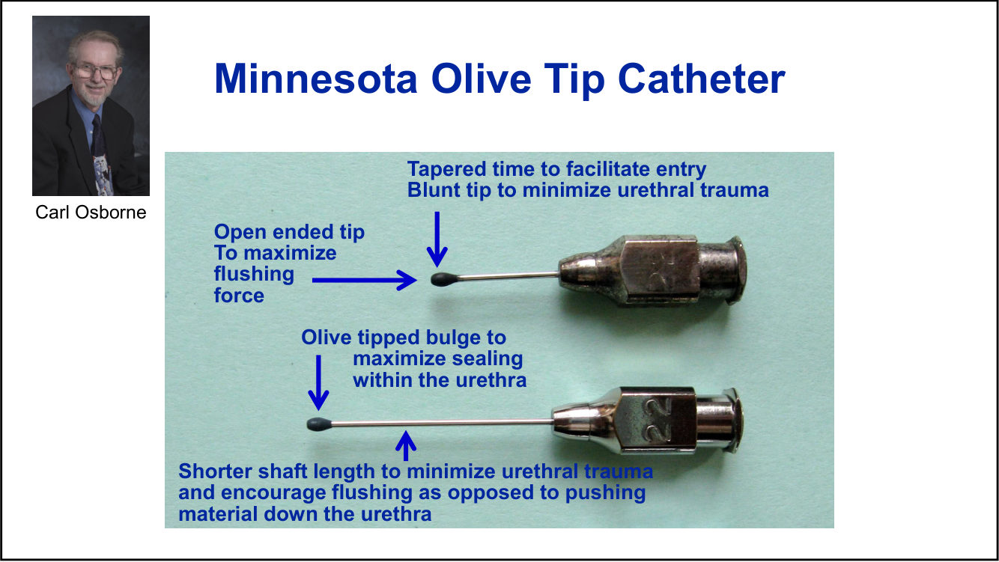
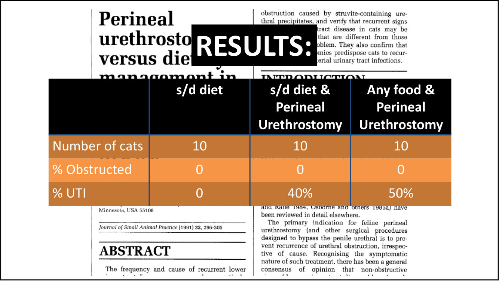
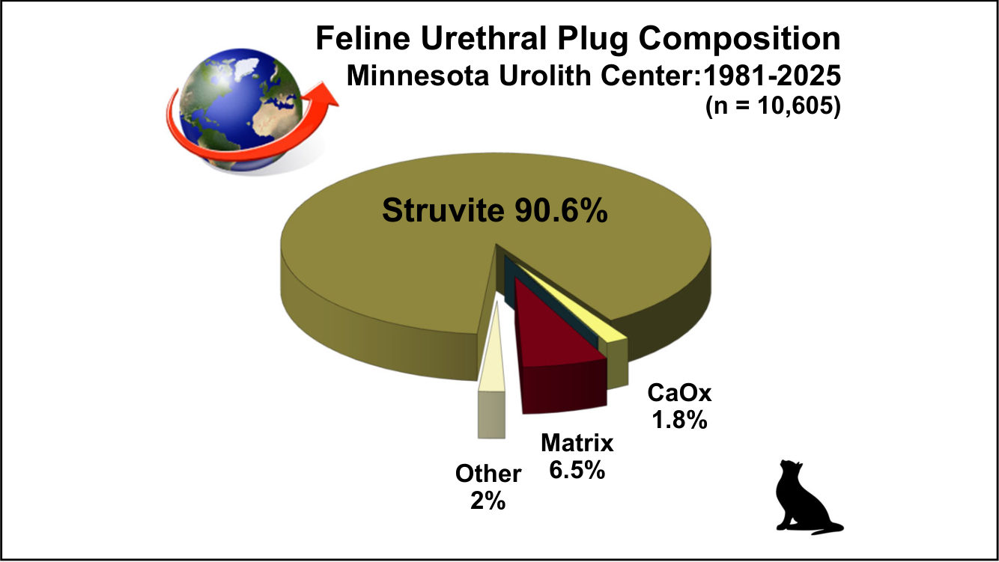
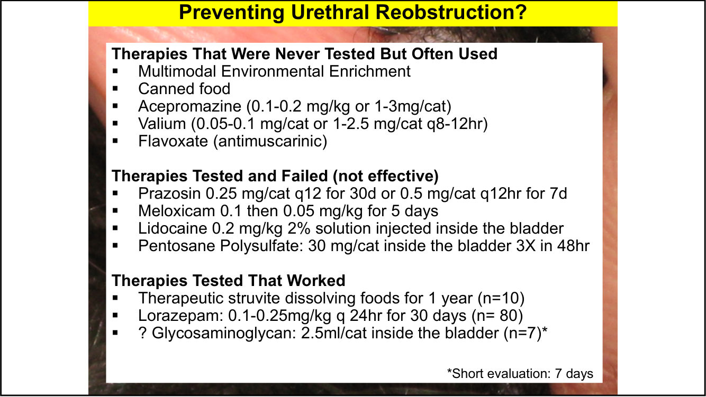

貓尿道阻塞：實證更新與明尼蘇達做法
主講：Jody Lulich, DVM, PhD, DACVIM（University of Minnesota／Minnesota Urolith Center）
2026-10-18 講座｜Evidence-Based Updates on the Treatment of Feline Urethral Obstruction（講義 47 頁，每頁 2 張投影片）｜場次 01
目前只有講義，沒有課堂錄音；講義上的影片與現場討論無法收錄。若之後有錄音，會再合併講者的口頭說明。
⭐ 必記原則
- 各研究的 30 天到 2 年再阻塞率 0–58%；明尼蘇達的做法在研究中 30 天只有 7%
- 明尼蘇達五步驟：先找原因 → 減壓膀胱穿刺 → 兩步驟解除阻塞（先沖、再放導管） → 留置導管 1–2 天 → 多管齊下預防
- 高血鉀：鈣劑保護心臟＋輸液＋解除阻塞就夠；JAVMA 2025 顯示額外的胰島素／葡萄糖、碳酸氫鈉、terbutaline 4 小時後沒有差別
- 減壓膀胱穿刺：減痛、減輕生化異常、降低逆沖阻力、拿到乾淨尿樣；研究中沒有造成膀胱破裂
- 解除阻塞之前先拍 X 光：尿道結石要「沖回膀胱」，不是往下推
- Lorazepam 0.25 mg/貓 q12h＋處方食品：雙盲隨機試驗中，再阻塞只發生在安慰劑組
- 尿道栓子 90–99% 是鳥糞石；處方食品＋飲食組 1 年 0% 再阻塞，只做 PU 不換食物的貓 50% 發生 UTI
- Prazosin、meloxicam、膀胱內 lidocaine 或 pentosan 試過但無效；環境豐富化、罐頭、acepromazine、diazepam 常用但沒被驗證過
再阻塞率與明尼蘇達五步驟
▾已發表的再阻塞率
| 研究 | 地點 | 追蹤 | n | 再阻塞率 |
|---|---|---|---|---|
| Osborne, JSAP 1991 | University of Minnesota（美國） | 1 年 | 30 | 0% |
| Splittstoesser, JAVMA 2026 | University of Minnesota（美國） | 30 天 | 72 | 7% |
| Reineke, JVECC 2017 | University of Pennsylvania（美國） | 30 天 | 44 | 16% |
| Segev, JFMS 2011 | Hebrew University（以色列） | 2 年 | 82 | 24% |
| Hanson, JFMS 2021 | University of Iowa（美國） | 30 天 | 65 | 25% |
| Beeston, JVIM 2022 | 英國（一般診所） | 1 年 | 1108 | 30% |
| Hetrich, JAVMA 2013 | 華盛頓州（專科醫院） | 30 天 | 192 | 30–37% |
| Gerber, JFMS 2008 | University of Zurich（瑞士） | 2 年 | 29 | 38% |
| Zezza, JVIM 2012 | University of Zurich（瑞士） | 60 天 | 26 | 58% |

💡 補充 各研究追蹤時間（30 天到 2 年）和族群不同，數字不能直接比較；但差距大到值得檢視「解除阻塞後做了什麼」。
明尼蘇達大學的做法（The University of Minnesota Method）
- 解除阻塞之前先確定原因
- 減壓膀胱穿刺（搭配軟管）
- 兩步驟清通尿道：a. 先用液體沖開尿道（搭配軟管）；b. 再輕輕放入留置導管
- 留置導管 1–2 天
- 多管齊下預防再阻塞：a. 放鬆尿道骨骼肌；b. 泌尿處方食品；c. 止痛；d. 環境豐富化

1. 穩定：灌流與高血鉀
▾先穩定（STABILIZE）
重建組織灌流：容積與心輸出。同時處理：高血鉀、酸血症、低血鈣、低體溫、尿毒、疼痛。
降低高血鉀與其副作用
| 目的 | 藥物 | 劑量（講義） |
|---|---|---|
| 保護心臟傳導 | 10% 葡萄糖酸鈣 | 0.5–1 mL/kg，慢慢給（15–20 分鐘），接 ECG 監測 |
| 轉移進細胞 | 葡萄糖 | 0.5–2 g/kg 稀釋後 IV |
| 轉移進細胞 | 短效（regular）胰島素 | 0.25–0.5–1 U/貓 IM（講義註明搭配葡萄糖 > 2 g/kg） |
| 轉移進細胞 | Terbutaline | 0.01 mg/kg IV、IM 或 SC |
| 轉移進細胞 | 碳酸氫鈉 | 1–2 mEq/kg，IV 15 分鐘以上（講義打了問號） |
| 稀釋 | 輸液 | |
| 排出 | 解除阻塞 |

證據：額外降鉀藥物有幫助嗎？（JAVMA 2025 年 10 月）
- 納入：尿道阻塞且 K > 7.5 mEq/L 的貓
- 初始穩定：LRS 20 mL/kg bolus＋葡萄糖酸鈣 300 mg＋減壓／解除阻塞
- 分組：IV LRS、胰島素＋葡萄糖、碳酸氫鈉、terbutaline
- 結果：4 小時內血鉀下降 30–48%，之後各組結果沒有差別
- 結論：初始用葡萄糖酸鈣、IV 輸液並解除尿道阻塞，之後一般輸液就足夠
2. 減壓膀胱穿刺
▾為什麼重要？
- 減輕膀胱疼痛
- 減輕阻塞造成的生化異常
- 降低逆行沖洗的阻力
- 拿到適合做尿液分析與培養的樣本
安全嗎？
講義引用兩篇研究：減壓膀胱穿刺沒有造成任何一隻貓膀胱破裂；併發症不是穿刺造成的（47 隻公貓的回溯研究，2009–2012；以及一篇腹腔積液發生率的研究）。
講義照片：穿刺針接軟式延長管與注射器，避免抽吸時針頭在膀胱內移動。
3. 解除阻塞前先拍 X 光
▾先診斷再治療
從「所有病患都一樣處理」走向個人化、精準治療：在放導管之前先拍 X 光，看有沒有尿道結石、結石在哪裡、膀胱裡還有沒有。
「推的人」還是「沖的人」？（Pusher or Flusher?）
講義用一系列 X 光示範尿道結石的位置。重點是：導管不應該把結石往下推，而是用液體把結石沖回膀胱，之後再處理（溶解或移除）。

80 隻貓解除阻塞前的 X 光診斷：栓子 45%、原因不明 40%、結石 14%、外部壓迫 1%。

4. 鎮靜麻醉與兩步驟解除阻塞
▾鎮靜與麻醉（依病情嚴重度選擇）
| 用途 | 藥物與劑量（講義） |
|---|---|
| 鎮靜（初步診斷、放 IV 導管、減壓穿刺） | 1. Butorphanol 0.2–0.3 mg/kg IM 2. Midazolam 0.2 mg/kg IM 3. 需要時加 ketamine 1–5 mg/kg IV |
| 麻醉 方案一 | Butorphanol IV（講義寫「0.5 to 0.5 mg/kg」，疑為筆誤）＋ midazolam 0.3 mg/kg IV |
| 麻醉 方案二 | Ketamine 2–4 mg/kg IV＋ diazepam 0.2–0.3 mg/kg 或 midazolam 0.1–0.2 mg/kg IV；血壓足夠的貓加 acepromazine 0.05 mg/kg IV |
| 麻醉 方案三 | 吸入麻醉 |
| 補充 | 需要時 propofol IV |
怎麼知道尿道已經夠放鬆？
需要時考慮 propofol，起始劑量 0.5–1 mg/kg IV 慢慢推。
尿道局部放鬆
| 給藥位置 | 藥物 |
|---|---|
| 硬脊膜外腔（薦尾椎） | Lidocaine 2%、ropivacaine、bupivacaine |
| 尿道腔內 | Lidocaine 2%、bupivacaine 0.5%、ropivacaine 0.2–0.5%、atracurium besylate 0.5 mg/mL |

兩步驟安全解除阻塞
- 第一步：先沖：用液體沖開尿道的阻塞，先清通再放導管
- 第二步：輕輕放入留置導管
明尼蘇達 olive tip 導管（Carl Osborne 設計）
- 開口端：沖洗力量最大
- 橄欖狀膨大：在尿道內密合，沖洗不回流
- 鈍頭、錐狀尖端：容易進入、減少尿道傷害
- 短軸：減少尿道傷害，鼓勵「沖」而不是把東西「推」下去
- 搭配開口導管＋低容量延長管

留置導管
解除阻塞後留置導管 1–2 天。
5. Lorazepam 研究：預防再阻塞
▾研究設計
- 假說：每天給 lorazepam 能比安慰劑減少再阻塞（主要）與下泌尿道症狀（次要）
- 納入：飼主的貓、第一次自發性尿道阻塞（栓子或原因不明），之前沒有介入或治療
- 排除：尿結石、UTI、之前因阻塞看過獸醫、之前用過泌尿道藥物（NSAID 或類固醇）
- 前瞻、雙盲、隨機、安慰劑對照臨床試驗，30 天
- 治療組：lorazepam 0.25 mg/貓 q12h＋ c/d Multicare 乾糧；安慰劑組：c/d Multicare 乾糧
- 主要結果：再阻塞
Lorazepam 屬於 benzodiazepine：增強 GABA 作用（Cl⁻ 通道開啟 → 細胞膜過極化），有抗焦慮、抗癲癇、鎮靜、骨骼肌放鬆效果。
結果與結論
- 所有貓都接受麻醉、解除阻塞、留置導管、代謝穩定、住院、出院；能口服時就開始給藥
- 再阻塞只發生在安慰劑組
- 結論：在栓子、結晶栓或尿道痙攣造成的阻塞解除後，lorazepam＋處方食品降低了住院貓的再阻塞率
- 未來需要多中心、大規模、標準化照護的研究來驗證
為什麼 lorazepam 不太會像 diazepam 造成肝毒性？
Diazepam 在貓經過第一相代謝，產生有傷害性的代謝物（nordiazepam、temazepam、oxazepam）；lorazepam 不經過這些第一相代謝物。
💡 補充 Lorazepam 主要直接進行葡萄糖醛酸化（第二相）排出；貓的葡萄糖醛酸化能力較弱，仍建議依講者劑量、短期使用並觀察。
臨床建議
| 項目 | 建議 |
|---|---|
| 劑量 | 0.25 mg/貓 q12h PO |
| 療程 | 最短 7 天；中等 14 天；最長（研究）30 天 |
6. 為什麼用處方食品？尿道栓子的流行病學
▾處方食品 vs 會陰尿道造口（PU）研究
- 假說：公貓陰莖段尿道的再阻塞可以用飲食或手術減少
- 納入：尿道腔內礦物質沉澱和／或基質造成阻塞的貓
- 前瞻、隨機對照、1 年；三組各 10 隻：s/d 食品、PU＋s/d、PU＋任何食物
| 組別 | 隻數 | 再阻塞 | UTI |
|---|---|---|---|
| s/d 食品 | 10 | 0 | 0 |
| s/d 食品＋PU | 10 | 0 | 40% |
| 任何食物＋PU | 10 | 0 | 50% |
栓子成分：鳥糞石 81%。

💡 補充 三組都沒有再阻塞，但做了 PU 的貓 UTI 明顯增加；不需要手術就能用食物達到同樣的預防效果。
證據：栓子與鳥糞石結晶
- 尿道栓子（n = 609、618）成分以鳥糞石 81% 為主，其次是基質、草酸鈣、其他
- 特發性膀胱炎的貓常有鳥糞石結晶尿：48%（Defauw 2011）、62%（Kruger 1991）、25%（Buffington 1997）、57%（Lund 2013）
尿道栓子流行病學研究（Minnesota Urolith Center）
回溯性病例對照研究：MUC 1981–2025 送驗的尿道栓子，對照 MUC 貓結石族群、貓鳥糞石族群（2011–2025）與醫院族群（2010–2025），共 44 年。問題：哪個年齡最常見？哪些品種有風險？有栓子的貓之後會不會長結石？
| 期間 | 鳥糞石 | 基質 | 草酸鈣 | 其他 |
|---|---|---|---|---|
| 1981–2025（n = 10,605） | 90.6% | 6.5% | 1.8% | 2% |
| 2025（n = 88） | 99% | — | — | 1% |

小結
- 幾乎所有尿道栓子都是鳥糞石
- 處方泌尿食品對貓鳥糞石的溶解效果是 100%
- 溶解並減少鳥糞石，對預防再阻塞與日後長結石都很重要
- 預防要持續多久還不知道，可能和鳥糞石結石類似（大約到 10 歲左右）
7. 預防再阻塞：哪些方法有證據？
▾三類療法
| 類別 | 療法（講義） |
|---|---|
| 常用但從沒被驗證 | 多管齊下環境豐富化；罐頭食物；acepromazine（0.1–0.2 mg/kg 或 1–3 mg/貓）；diazepam（講義寫 0.05–0.1 mg/貓 或 1–2.5 mg/貓 q8–12h）；flavoxate（抗蕈毒鹼） |
| 試過但無效 | Prazosin 0.25 mg/貓 q12h 30 天 或 0.5 mg/貓 q12h 7 天；meloxicam 0.1 再 0.05 mg/kg 共 5 天；膀胱內 lidocaine 0.2 mg/kg（2% 溶液）；膀胱內 pentosan polysulfate 30 mg/貓，48 小時內 3 次 |
| 試過且有效 | 鳥糞石溶解處方食品 1 年（n = 10）；lorazepam（n = 80）；膀胱內 glycosaminoglycan 2.5 mL/貓（n = 7，只追蹤 7 天，打問號） |
